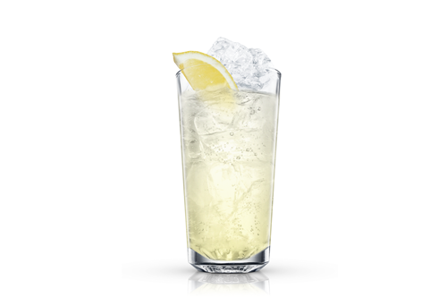

| ГЛАВНАЯ | Маргарита | Голубая лагуна | Зелёная фея | Пина Колада | Текила Санрайз |
|  |
Способ приготовления:
|
Нечасто официант ресторана в отеле, будто консьерж Густав в фильме "Отель "Гранд Будапешт", становится центром всеобщего внимания и любви. Но это был именно такой случай.
Маленький кругленький Джон Коллинз обладал необыкновенной энергетикой и потрясающе живописными речевыми оборотами. Возможно, за это его так любили Ричард Бринсли, знаменитый сочинитель англо- ирландских театральных пьес, и не менее известный вам писатель по прозвищу Боз – не кто иной, как Чарльз Диккенс, который дружил с Джоном и даже навещал его в деревне под Лондоном, куда тот отправился на покой после 40 лет работы старшим официантом в ресторане "Лиммерс". Фирменным напитком нашего героя был "Джин Панч", рецептура и описание которого не сохранились, но есть мнение, что этот пунш был очень похож на напиток, подаваемый в лондонском Гарвик-клубе и состоял из джина, лимонного сока, ликера "Мараскино" и содовой. Благодаря офицерам британской армии напиток не только получил имя в честь создателя, но и перекочевал вместе с ними на службу в Америку. Согласно изданию New York World, офицеры королевской артиллерии то и дело обучали работников бара нью-йоркского отеля Clarendon готовить John Collins.
В 1876 году популярность летнего напитка долетела и до Луизианы, где "отец всех бартендеров" Джерри Томас включил его в свой второй барменский справочник под названием "Том Коллинз". Тем самым подарив комикам нового героя для насмешек: шутники на протяжении десятилетия спрашивали друг у друга, хороший ли парень Том Коллинз
С тех пор каждый мог выбрать себе друга по душе – те, кому нравился виски, останавливались на Джоне Коллинзе, предпочитающие текилу общались с Пепито, ценители коньяка встречались с Пьером, а Педро Коллинз развлекал любителей рома.
К рецепту